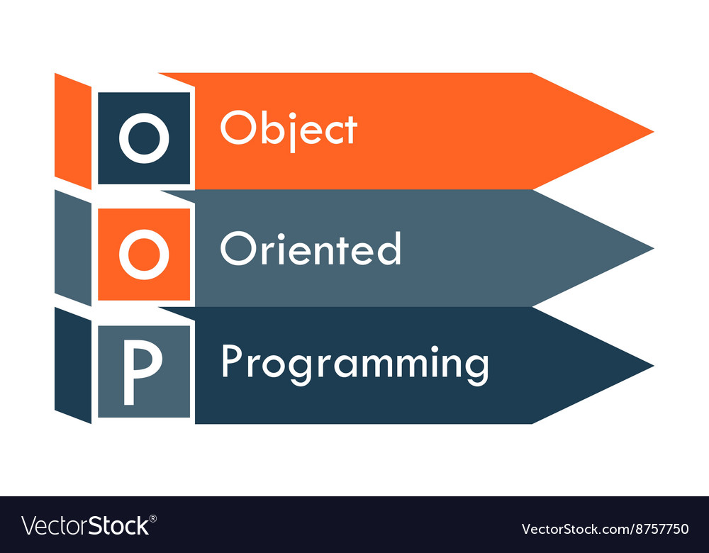
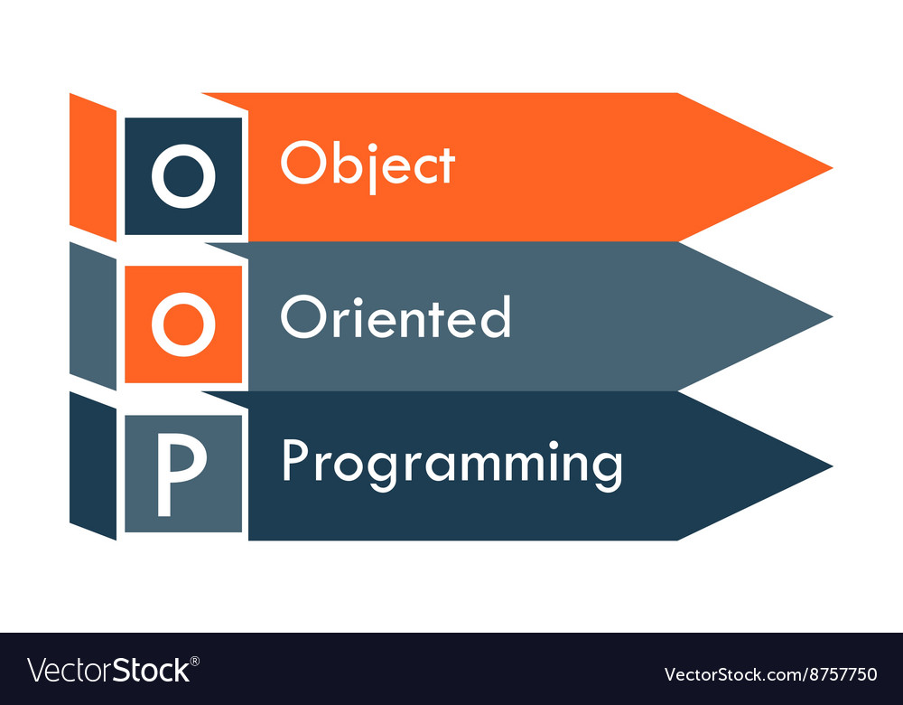

Navod Amarasinghe
I'm a Student who dreams to become a Full Stack Developer.
Check My CV My name is Malith Navod Amarasinghe.
I am twenty five year old Undergraduate student in Software engineering at Institute of Software Engineering in Pandura.
My primary and secondary education is complete, and to complete it I went to President's Collede Sri Jayawardhanapura Kotte.
I am a very outgoing and fun loving preson with very friendly attitude can work with anyone also I am a hardwoking person with have passion complete the work in time and complete.
Currently I live in Thalawathugoda area with my family.
My future target is to become a Software Engineer and also spent my life peacefully by helping others.
My programming journy started as my base laguage is Java then DBMS concepts,
after I learn Object oriented concepts, architecture and ORM concepts. After that I have experience with basic web concepts,
then Java EE and SpringMVC framework And also ReactJS.
These are the areas I have experiencewith.
Although I would like to gain any type of programming knowledge and I can easyly adapt.
This is biref introduction of me.

I have Learn all the bacis of the mobile Application Development and also the design patterns,design principles and other Architectures knowledge and experience I have been currently gaining in this semester.
I have Learn all the bacis of the Web development,ORM Conceptd,JavaEnterprise ,Spring Framework and also the ReactJS library with MERN stack knowledge and experience I have gain in this semester.
I have Learn all the bacis of the Java Programming,Database Management System, OOP Concepts and Analysing skills and also the Architecture knowledge of programming.
For my higher Education I choose Software Engineering at Institute of Software Engineering(IJSE) Pandura.
It is the turning point of my life because it gives me a hope and futuer for work hard
As a student of Sri Lanka, this is the most important exam because it opens parth to higher Education I have to pass Advance Level Exam to successfuly completed my senior secondary Education, done and passed in 2017 in Physical stream. At that time I was a Student of Prisident's College Kotte and that's the end of my school life.
As a student of Sri Lanka I have to pass Ordinary Level Exam to successfuly completed my junior secondary Education, done and passed in 2013. At that time I was a Student of Prisident's College Kotte.


.jpg)

.jpg)
 
